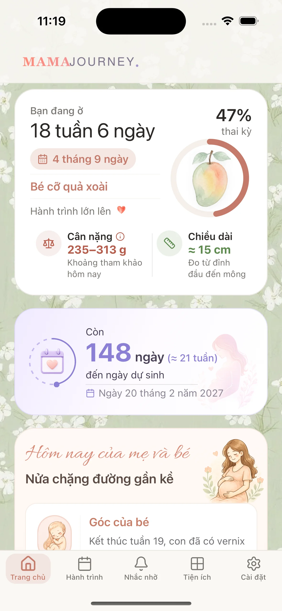

Tính ngày dự sinh
Nhập ngày đầu kỳ kinh cuối để ước tính ngày dự sinh, tuổi thai và số ngày còn lại. Kết quả chỉ là ước tính.
Kết quả dự kiến của mẹ
Tuổi thai hiện tại
Số ngày còn lại
Đồng hành cùng bé qua từng tuần thai
Theo dõi các cột mốc thai kỳ, quản lý nhắc nhở và lưu giữ hành trình cùng MamaJourney.
- Xem mốc thai kỳ theo từng tuần
- Nhắc những việc mẹ đã tạo
- Lưu lại các cột mốc đáng nhớ

Cách công cụ tính
Với chu kỳ 28 ngày, ngày dự sinh ước tính bằng ngày đầu kỳ kinh cuối cộng 280 ngày, tức khoảng 40 tuần. Nếu chu kỳ khác 28 ngày, công cụ cộng thêm số ngày chênh lệch: độ dài chu kỳ trừ 28.
Tuổi thai cũng được tính từ ngày đầu kỳ kinh cuối, không tính từ ngày thụ thai. Vì vậy những tuần đầu đã gồm khoảng hai tuần trước khi thụ thai.
Điều cần biết
- Ngày dự sinh tính từ kỳ kinh cuối là ước tính, không phải ngày sinh đã được xác nhận.
- Độ dài chu kỳ và thời điểm rụng trứng có thể làm ước tính lệch.
- Siêu âm và thăm khám có thể chỉnh lại tuổi thai.
- Công cụ không chẩn đoán có thai và không đánh giá sức khỏe của bé.
Câu hỏi thường gặp
Nếu mẹ không nhớ ngày kinh cuối thì sao?
Công cụ cần ngày đó để tính. Nếu mẹ không chắc, hãy hỏi bác sĩ hoặc cơ sở khám thai thay vì đoán một ngày.
Siêu âm có thể điều chỉnh ngày dự sinh không?
Có thể. Siêu âm trong những tháng đầu, thường khoảng 12 tuần, đo kích thước của bé và có thể điều chỉnh ngày dự sinh so với cách tính từ kỳ kinh.
Công cụ có lưu ngày mẹ nhập không?
Không. Phép tính chạy trên trình duyệt của mẹ. Trang không gửi ngày kinh cuối đi đâu và không lưu lại.
Nguồn và lưu ý
- NHS — Pregnancy due date calculator: ngày dự sinh ước tính từ ngày đầu kỳ kinh cuối; chu kỳ có thể khác 28 ngày; thai kỳ thường từ 37 đến 42 tuần.
- NHS — Ultrasound scans in pregnancy: siêu âm khoảng 12 tuần có thể điều chỉnh ngày dự sinh đã tính từ kỳ kinh cuối.
Nội dung này nhằm giải thích cách công cụ tính. Không thay cho tư vấn của bác sĩ hoặc cơ sở khám thai.